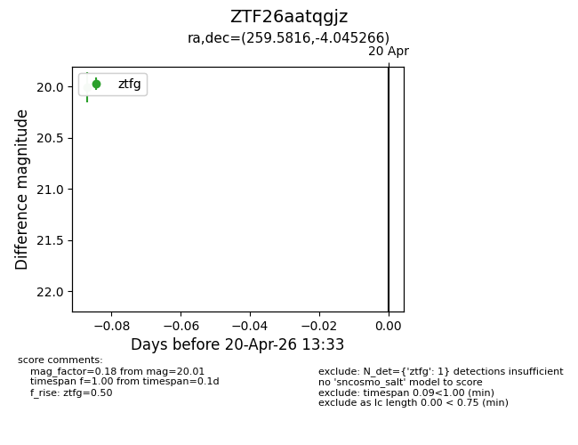
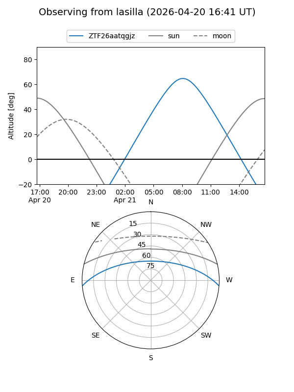
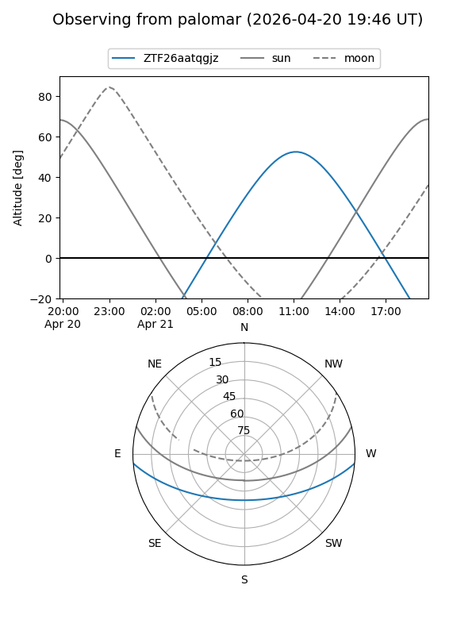

ZTF26aatqgjz
Target ZTF26aatqgjz at 2026-04-20 13:46
Aliases and brokers:
FINK: link
Lasair: link
ALeRCE: link
alt names
ZTF26aatqgjz (ztf,fink_ztf)
Coordinates:
equatorial (ra, dec) = 259.5816,-4.04527
equatorial (HMS+DMS) = 17:18:19.57,-04:02:42.96
galactic (l, b) = (18.1064,+18.58266)
Flags:
Photometry:
last ztfg=20.01
1 ztfg detections
Lightcurve

Visibility


Additional plots